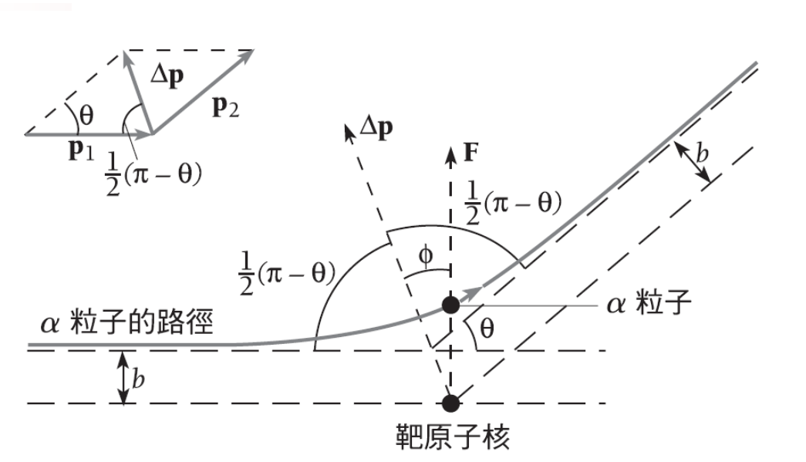

近代物理學 - 原子結構 (Modern Physics - Atomic Structure)#
日期: 2026.03.31
4.1 核原子 (The Nuclear Atom)#
在 20 世紀初，對於原子內部結構的理解經歷了重大的變革。1898 年，J.J. 湯姆生 (J.J. Thomson) 提出了「布丁模型 (Plum Pudding Model)」，認為帶正電的物質均勻分佈在整個原子中，而帶負電的電子像葡萄乾一樣鑲嵌其中，這意味著原子的實體大小遠大於電子。
然而，拉塞福 (Ernest Rutherford) 透過 \(\alpha\) 粒子散射實驗推翻了這個模型，實驗結果確立了以下核心概念：
推翻布丁模型：\(\alpha\) 粒子發生大角度散射的機率遠高於布丁模型的預測
原子核的發現：原子的正電荷與絕大部分質量，集中在一個極小的區域內，稱為「原子核 (Nucleus)」
極端密度：原子核的半徑約為 \(10^{-15}\text{ m}\)，計算出的密度 \(\rho \approx 2.4 \times 10^{17}\text{ kg/m}^3\)，這與宇宙中中子星的密度相當
實驗數據完美符合拉塞福基於庫倫斥力推導出的散射方程式

拉塞福散射公式 (Rutherford Scattering Formula)#
拉塞福推導出，在特定散射角 \(\theta\) 上單位面積偵測到的 \(\alpha\) 粒子數量分佈如下：
\(N(\theta)\) : 在散射角 \(\theta\) 處，單位面積到達偵測屏幕的 \(\alpha\) 粒子數 \([\text{m}^{-2}]\)
\(N_i\) : 入射的 \(\alpha\) 粒子總數 \([\text{dimensionless}]\)
\(n\) : 靶材（如金箔）單位體積內的原子數 \([\text{atoms/m}^3]\)
\(Z\) : 靶材原子的原子序 \([\text{dimensionless}]\)
\(e\) : 基本電荷，\(e \approx 1.602 \times 10^{-19}\text{ C}\)
\(\epsilon_0\) : 真空電容率，\(\epsilon_0 \approx 8.854 \times 10^{-12}\text{ F/m}\)
\(R\) : 靶材到偵測屏幕的距離 \([\text{m}]\)
\(KE\) : 入射 \(\alpha\) 粒子的初始動能 \([\text{J}]\)
\(t\) : 靶材厚度 \([\text{m}]\)
\(\theta\) : 散射角 (Scattering angle) \([\text{rad}]\) 或 \([\text{degree}]\)
已知與假設#
【已知 1】 實驗設計 ：
質量為 \(m\)、帶正電 \(2e\) 的 \(\alpha\) 粒子以速度 \(v\) 撞擊帶正電 \(Ze\) 的靜止原子核
【假設 1】 彈性碰撞 ：
\[ p_1 = p_2 \overset{\text{已知 1}}{=} mv =p\]彈性碰撞， \(\alpha\) 粒子動量的大小不變但方向改變了 \(\theta\)
\(p_1 \overset{\text{def}}{=} \left| \mathbf{p}_1 \right|\) 撞擊前的 \(\alpha\) 粒子動量純量 \([\text{kg} \cdot \text{m} \cdot \text{s}^{-1}]\)
\(p_2 \overset{\text{def}}{=} \left| \mathbf{p}_2 \right|\) 撞擊後的 \(\alpha\) 粒子動量純量 \([\text{kg} \cdot \text{m} \cdot \text{s}^{-1}]\)
\(m\) \(\alpha\) 粒子的質量 \([\text{kg} ]\)
\(v\) \(\alpha\) 粒子的速度 \([\text{m} \cdot \text{s}^{-1}]\)
\(p\) \(\alpha\) 粒子的動量 \([\text{kg} \cdot \text{m} \cdot \text{s}^{-1}]\)
【已知 1】 靜電力 ：
\[\begin{split}\begin{gather*} \mathbf{F}_{\text{Electrostatic}} &\overset{\text{def}}{=}& -\frac{kQq}{r^{2}} \hat{r} \\ &=&\frac{-1}{4\pi\epsilon_{0}} \frac{(2e)(Ze)}{r^{2}} \\ &=&\frac{-1}{4\pi\epsilon_{0}} \frac{2Ze^{2}}{r^{2}} \\ &=&\frac{-Ze^{2}}{2\pi\epsilon_{0}} \frac{1}{r^{2}} \\ \end{gather*}\end{split}\]\(e\) : 基本電荷 (Elementary charge)，\(e \approx 1.602 \times 10^{-19} \text{ C}\)
\(\epsilon_0\) : 真空電容率 (Vacuum permittivity)，\(\epsilon_0 \approx 8.854 \times 10^{-12} \text{ F}\cdot\text{m}^{-1} : [\text{ C}^{2}\cdot\text{Nt}^{-1}\cdot\text{m}^{-2}]\)
\(r\) : 原子核和 \(\alpha\) 粒子的距離 \([\text{m}]\)
\(Z\) : 靶材原子的原子序 \([\text{dimensionless}]\)
【已知 2】 牛頓第二定律 ：
\[\Delta \mathbf{p} = \mathbf{p}_2 - \mathbf{p}_1 = \int_{t_1}^{t_2} \mathbf{F} \, dt\]\(\Delta \mathbf{p}\) : 動量變化向量 \([\text{kg} \cdot \text{m} \cdot \text{s}^{-1}]\)
\(\mathbf{p}_1\) 撞擊前的 \(\alpha\) 粒子動量向量 \([\text{kg} \cdot \text{m} \cdot \text{s}^{-1}]\)
\(\mathbf{p}_2\) 撞擊後的 \(\alpha\) 粒子動量向量 \([\text{kg} \cdot \text{m} \cdot \text{s}^{-1}]\)
\(F\) : 原子核給 \(\alpha\) 粒子的力 \([\text{kg} \cdot \text{m} \cdot \text{s}^{-2}]\)
【已知 3】 Al-Kashi’s Law of Cosines ：
\[c^2 = a^2 +b^2 -2ab \cos \theta \]本題中
\(c \overset{\text{let}}{=} \Delta p\)
\(a \overset{\text{let}}{=} \Delta p_1\)
\(b \overset{\text{let}}{=} \Delta p_2\)
\(\theta \overset{\text{let}}{=} \theta \)
【已知 4】 半角公式（Half-Angle Formulas） ：
\[\sin \frac{\theta}{2} = \pm \sqrt{\frac{1-\cos\theta}{2}}\]【已知 5】 動量變化量的大小 ：
\[\begin{split}\begin{gather*} (\Delta p)^2 &\overset{\text{已知 3}}{=}& p_1^2 + p_2^2 -2 \times p_1 p_2 \cos \theta \\ (\Delta p)^2 &\overset{\text{假設 1}}{=}& p^2 + p^2 -2 \times p \cdot p \cos \theta \\ (\Delta p)^2 &=& 2 p^2 (1-\cos \theta ) \\ \Delta p &=& \sqrt{2} p \sqrt{1-\cos \theta } \\ \Delta p &=& 2 p \sqrt{\frac{1-\cos \theta}{2} } \\ \Delta p &\overset{\text{已知 4}}{=}& 2 p \left(\pm \sin \frac{\theta}{2} \right)\\ \left|\Delta p \right| &=& \left|2 p \left(\pm \sin \frac{\theta}{2}\right) \right| \\ \Delta p &=& 2 p \sin \frac{\theta}{2} \end{gather*}\end{split}\]\(\Delta p \overset{\text{def}}{=} \left| \Delta \mathbf{p} \right|\) : 動量變化純量 \([\text{kg} \cdot \text{m} \cdot \text{s}^{-1}]\)
\(p_1 \overset{\text{def}}{=} \left| \mathbf{p}_1 \right|\) 撞擊前的 \(\alpha\) 粒子動量純量 \([\text{kg} \cdot \text{m} \cdot \text{s}^{-1}]\)
\(p_2 \overset{\text{def}}{=} \left| \mathbf{p}_2 \right|\) 撞擊後的 \(\alpha\) 粒子動量純量 \([\text{kg} \cdot \text{m} \cdot \text{s}^{-1}]\)
\(\theta\) : \(\alpha\) 粒子散射角度
【已知 6】 奇函數積分 ：
\[ \begin{align}\begin{aligned}\begin{split}\begin{gather*} \int_{-a}^{a} f(x) \, dx &=& 0 \\\end{split}\\ \end{gather*}\end{aligned}\end{align} \]\(f(x)\) 是奇函數
\(\text{奇函數} \times \text{偶函數} \in \text{奇函數}\)
\(\sin x \in \text{奇函數}\)
\(\text{電磁力} \in \text{偶函數}\)
\(r^2 \in \text{偶函數}\)
\(\int_{-\phi_0}^{\phi_0} \sin \phi_0 \times \text{電磁力} r^2 d \phi_0 = 0 \)
【已知 7】角動量守恆 ：
\[\begin{split}\begin{gather*} &\frac{d\mathbf{L}}{dt} &\overset{\text{def}}{=}& \boldsymbol{\tau} \\ &\frac{d\mathbf{L}}{dt} &=& \mathbf{r} \times \mathbf{F} \\ &\frac{d\mathbf{L}}{dt} &=& 0 \\ \Rightarrow&\mathbf{L}_1 &=& \mathbf{L}_{\text{any time}}\\ & |\mathbf{L}_1| &=& |\mathbf{L}_{\text{any time}}|\\ & |\mathbf{r_1} \times \mathbf{p_1}| &=& L_{\text{any time}}\\ & r_1 p_1 \sin \alpha &=& L_{\text{any time}}\\ & p_1 \cdot (r_1 \sin \alpha)&=& L_{\text{any time}}\\ & p_1 \cdot b &=& L_{\text{any time}}\\ & p_1 \cdot b &=& |\mathbf{r} \times \mathbf{p}|\\ & p_1 \cdot b &=& m \cdot r \cdot v_\phi\\ & p_1 \cdot b &=& mr \cdot \left( r \frac{d\phi}{dt} \right) \\ & p_1 \cdot b &=& mr^2 \frac{d\phi}{dt} \\ & mv_1 \cdot b &=& mr^2 \frac{d\phi}{dt} \\ &\frac{d\phi}{dt} &=& \frac{v_1b}{r^2} \end{gather*}\end{split}\]\(\mathbf{F}\) 是庫倫斥力永遠沿著徑向方向（也就是平行於位置向量 \(\mathbf{r}\)），所以 \(\mathbf{r} \times \mathbf{F} = 0\)
\(b\) 是 撞擊參數 (Impact parameter) \(b\) 定義為「\(\alpha\) 粒子的初始直線飛行路徑」與「平行該路徑且穿過原子核中心的直線」之間的垂直距離。這是一個在實驗一開始就決定好的「幾何初始條件」。對於同一顆粒子，在這一次的飛行過程中，\(b\) 是一個固定的常數。 \([\text{m}]\)
\(r\) 是原子核和 \(\alpha\) 粒子的距離 \([\text{m}]\)
\(v_1\) 是 \(\alpha\) 粒子的初始速度 \([\text{m} \cdot \text{s}^{-1}]\)
\(\phi\) 是「對稱軸( \(\Delta \mathbf{p}\) )」與「原子核到 \(\alpha\) 粒子的連線」之間的夾角
【已知 8】 力的分量積分 ：
\[\begin{split}\begin{gather*} \left| \int_{t_1}^{t_2} \mathbf{F} \, dt \right| &=& \left| \int_{t_1}^{t_2} F_{\parallel} + F_{\perp} \, dt \right| \\ &=& \left| \\int_{t_1}^{t_2} \left( F \cos \phi \ \hat{i} + F \sin \phi \ \hat{j} \right) \, dt \right| \\ &=& \left| \left( \int_{t_1}^{t_2} F \cos \phi \, dt \right) \hat{i} + \left( \int_{t_1}^{t_2} F \sin \phi \, dt \right) \hat{j} \right| \\ &=& \left| \left( \int_{t_1}^{t_2} F \cos \phi \, dt \right) \hat{i} + \left( \int_{\phi_0}^{-\phi_0} F \sin \phi \frac{d t}{d \phi} \, d \phi \right) \hat{j} \right| \\ &\overset{\text{已知 7}}{=}& \left| \left( \int_{t_1}^{t_2} F \cos \phi \, dt \right) \hat{i} + \left( \int_{\phi_0}^{-\phi_0} F \sin \phi \left( \frac{r^2}{v_1b} \right) \, d \phi \right) \hat{j} \right| \\ &=& \left| \left( \int_{t_1}^{t_2} F \cos \phi \, dt \right) \hat{i} + \left( \frac{1}{v_1b} \int_{\phi_0}^{-\phi_0} F \sin \phi r^2 \, d \phi \right) \hat{j} \right| \\ &\overset{\text{已知 6}}{=}& \left| \left( \int_{t_1}^{t_2} F \cos \phi \, dt \right) \hat{i} + \frac{1}{v_1b} 0 \cdot \hat{j} \right| \\ &=& \sqrt{\left( \int_{t_1}^{t_2} F \cos \phi \, dt \right)^2 + 0^2} \\ &=& \int_{t_1}^{t_2} F \cos \phi \, dt \end{gather*}\end{split}\]\(F\) : 是庫倫斥力 \([\text{kg} \cdot \text{m} \cdot \text{s}^{-2}]\)
\(\phi\) 是「對稱軸( \(\Delta \mathbf{p}\) )」與「原子核到 \(\alpha\) 粒子的連線」之間的夾角
【已知 9】 古典動能 ：
\[KE = \frac{1}{2}mv^2\]\(KE\) 古典動能 \([\text{J}]\)
\(m\) 物體質量 \([\text{kg}]\)
\(v\) 物體速度 \([\text{m} \cdot \text{s}^{-1}]\)
【已知 10】 撞擊參數\(b\) 和散射角度\(\theta\)的關係：
\[\begin{split}\begin{gather*} \Delta p &\overset{\text{已知 2}}{=}& \int_{t_1}^{t_2} \mathbf{F} \, dt \\ \left| \Delta p \right| &=& \left| \int_{t_1}^{t_2} \mathbf{F} \, dt \right|\\ 2 p \sin \frac{\theta}{2} &\overset{\text{已知 5}}{=}& \left| \int_{t_1}^{t_2} \mathbf{F} \, dt \right| \\ 2 p \sin \frac{\theta}{2} &\overset{\text{已知 8}}{=}& \int_{t_1}^{t_2} F \cos \phi \, dt \\ 2 p \sin \frac{\theta}{2} &=& \int_{-\frac{\pi-\theta}{2}}^{+\frac{\pi-\theta}{2}} F \cos \phi \frac{dt}{d\phi} \, d\phi \\ 2 p \sin \frac{\theta}{2} &\overset{\text{已知 7}}{=}& \int_{-\frac{\pi-\theta}{2}}^{+\frac{\pi-\theta}{2}} F \cos \phi \frac{r^2}{v_1b} \, d\phi \\ 2 p \sin \frac{\theta}{2} &\overset{\text{已知 1}}{=}& \int_{-\frac{\pi-\theta}{2}}^{+\frac{\pi-\theta}{2}} \frac{-Ze^{2}}{2\pi\epsilon_{0}} \frac{1}{r^{2}} \cos \phi \frac{r^2}{v_1b} \, d\phi \\ 2 p \sin \frac{\theta}{2} &=& \int_{-\frac{\pi-\theta}{2}}^{+\frac{\pi-\theta}{2}} \frac{-Ze^{2}}{2\pi\epsilon_{0}} \cos \phi \frac{1}{v_1b} \, d\phi \\ 2 p \sin \frac{\theta}{2} &=& \frac{-Ze^{2}}{2\pi\epsilon_{0} v_1b} \int_{-\frac{\pi-\theta}{2}}^{+\frac{\pi-\theta}{2}} \cos \phi \, d\phi \\ 2 p \sin \frac{\theta}{2} &=& \frac{-Ze^{2}}{2\pi\epsilon_{0} v_1b} \int_{-\frac{\pi-\theta}{2}}^{+\frac{\pi-\theta}{2}} \cos \phi \, d\phi \\ 2 p \sin \frac{\theta}{2} &=& \frac{-Ze^{2}}{2\pi\epsilon_{0} v_1b} \left[ \sin \phi \right]_{-\frac{\pi-\theta}{2}}^{+\frac{\pi-\theta}{2}} \\ 2 p \sin \frac{\theta}{2} &=& \frac{-Ze^{2}}{2\pi\epsilon_{0} v_1b} \left( 2\sin\left(\frac{\pi-\theta}{2}\right) \right) \\ 2 p \sin \frac{\theta}{2} &=& \frac{-Ze^{2}}{\pi\epsilon_{0} v_1b} \cos \frac{\theta}{2}\\ 2 p \sin \frac{\theta}{2} &\overset{\text{假設 1}}{=}& \frac{-Ze^{2}}{\pi\epsilon_{0} vb} \cos \frac{\theta}{2}\\ 2 mv \sin \frac{\theta}{2} &=& \frac{-Ze^{2}}{\pi\epsilon_{0} vb} \cos \frac{\theta}{2}\\ b &=& \frac{Ze^2}{2\pi\epsilon_0 mv^2} \cot \frac{\theta}{2}\\ b &\overset{\text{已知 9}}{=}& \frac{Ze^2}{4\pi\epsilon_0 KE} \cot \frac{\theta}{2}\\ \end{gather*}\end{split}\]【定義 1】 有效截面積 ：
\[\sigma \overset{\text{def}}{=} \pi b^2\]\(\sigma\) 古典動能 \([\text{J}]\)
\(b\) 撞擊參數 (Impact parameter) \(b\) 定義為「\(\alpha\) 粒子的初始直線飛行路徑」與「平行該路徑且穿過原子核中心的直線」之間的垂直距離。 \([\text{m}]\)
【已知 11】 計算落在該角度區間的「總粒子數」 ：
\[\begin{split}\begin{gather*} f &=& \pi nt b^2 \\ \frac{df}{d \theta} &=& \pi nt \frac{db^2}{d \theta} \\ df &=&\pi nt \frac{db^2}{d \theta} d \theta \\ \end{gather*}\end{split}\]\(f\) 是散射角大於 \(\theta\) 的機率或比例
\(df\) 是散射角介於 \(\theta\) 與 \(\theta + d\theta\) 之間的 \(\alpha\) 粒子比例
\(t\) 靶材厚度 \([\text{m}]\)
\(n\) 單位體積原子數量 \([\text{個原子核} \cdot\text{m}^{-3}] =[\text{atoms} \cdot\text{m}^{-3}] \)
【已知 12】 計算落在該角度區間的「總粒子數」 ：
\[\begin{split}\begin{gather*} dN &=& N_i |df| \\ dN &\overset{\text{已知 11}}{=}& N_i |\pi nt \frac{db^2}{d \theta} d \theta | \\ dN &=& N_i \pi nt \left| \frac{d}{d \theta} \left[ \left( \frac{Ze^2}{4\pi\epsilon_0 KE} \right)^2 \cot^2 \frac{\theta}{2} \right] \right| d \theta \\ dN &=& N_i \pi nt \left( \frac{Ze^2}{4\pi\epsilon_0 KE} \right)^2 \left| \frac{d}{d \theta} \left[ \cot^2 \frac{\theta}{2} \right] \right| d \theta \\ dN &=& N_i \pi nt \left( \frac{Ze^2}{4\pi\epsilon_0 KE} \right)^2 \left| - \cot \frac{\theta}{2} \csc^2 \frac{\theta}{2} \right| d \theta \\ dN &=& N_i \pi nt \left( \frac{Ze^2}{4\pi\epsilon_0 KE} \right)^2 \cot \frac{\theta}{2} \csc^2 \frac{\theta}{2} d \theta \\ \end{gather*}\end{split}\]\(dN\) 是散射角介於 \(\theta\) 與 \(\theta + d\theta\) 之間的 \(\alpha\) 粒子個數
\(N_i\) 總共發射的 \(\alpha\) 粒子個數
【已知 13】 探測器圓環的總面積 ：
\[\begin{split}\begin{gather*} dA &=& (2\pi R \sin\theta) \cdot (R d\theta) \\ &=& 2\pi R^2 \sin\theta d\theta \end{gather*}\end{split}\]\(R\) : 靶材到偵測屏幕的距離 \([\text{m}]\)
\(A\) 是距離原子核 \(R\) 探測器的面積 \([\text{m}^2]\)
\(\theta\) : 散射角 (Scattering angle) \([\text{rad}]\) 或 \([\text{degree}]\)
【已知 14】 三角函數化簡 ：
\[\begin{split}\begin{gather*} \frac{\cot \frac{\theta}{2} \csc^2 \frac{\theta}{2}}{\sin\theta} &=& \frac{ \left( \frac{\cos(\theta/2)}{\sin(\theta/2)} \right) \cdot \left( \frac{1}{\sin^2(\theta/2)} \right) }{ 2 \sin(\theta/2) \cos(\theta/2) } \\ &=& \frac{ \frac{\cos(\theta/2)}{\sin^3(\theta/2)} }{ 2 \sin(\theta/2) \cos(\theta/2) }\\ &=& \frac{1}{2 \sin^4\frac{\theta}{2}} \end{gather*}\end{split}\]
proof#
實驗上探測器量到的「單位面積粒子數」\(N(\theta)\) 就是 圓環上的總粒子數 \(dN\) 除以 圓環的面積 \(dA\)
正向碰撞 (Head-on Collision) 與原子核尺寸#
當撞擊參數 \(b=0\) 時，\(\alpha\) 粒子會直直衝向原子核並發生 \(180^\circ\) 的反彈，在最靠近原子核的瞬間 \(\alpha\) 粒子的速度為零，其初始動能完全轉換為電位能。實驗上，這是用來估算原子核最大半徑 \(R_{\text{atom}}\) 的方法。
\(KE_{\text{initial}}\) : 粒子的初始總動能 \([\text{J}]\)
\(PE\) : 系統的靜電位能 \([\text{J}]\)
\(R\) : 最接近距離，即原子核半徑的上限 \([\text{m}]\)
\(m\) : \(\alpha\) 粒子的質量 \([\text{kg}]\)
\(v_0\) : \(\alpha\) 粒子的初始速度 \([\text{m} \cdot \text{s}^{-1}]\)
\(Z\) : 靶材原子的原子序 \([\text{dimensionless}]\)
\(e\) : 基本電荷，\(e \approx 1.602 \times 10^{-19}\text{ C}\)
\(\epsilon_0\) : 真空電容率，\(\epsilon_0 \approx 8.854 \times 10^{-12}\text{ F/m} : [\text{ C}^{2}\cdot\text{Nt}^{-1}\cdot\text{m}^{-2}]\)
例題 4.1：金箔散射機率#
題目： 求出能量為 \(7.7\text{ MeV}\) 的 \(\alpha\) 粒子束入射到厚度為 \(3 \times 10^{-7}\text{ m}\) 的金箔時，散射角大於 \(90^\circ\) (即向後散射 \(\theta > 90^\circ\)) 的比例為何？金的原子量為 \(197\text{ u}\)，密度 \(\rho = 1.93 \times 10^4\text{ kg/m}^3\)，原子序 \(Z=79\)，\(1\text{ u} \overset{\text{def}}{=} \frac{1 \text{ g}}{N_A} = \frac{10^{-3} \text{ kg}}{6.022 \times 10^{23}} = 1.66 \times 10^{-27} \text{ kg}\)
首先計算金箔單位體積內的原子數 \(n\)：
【物理知識回顧】 這代表大約每 82,645 個入射 \(\alpha\) 粒子中，會有 1 個被散射到大於 90 度的角度。這告訴我們，即使是看起來緻密的金屬箔，對於高能 \(\alpha\) 粒子來說，絕大部分的空間都如同「真空」一般透明， 原子的質量與正電荷確實只集中在一個極其微小的核心。
4.2 電子軌道 (Electron Orbits)#
古典的行星模型#
在確立了原子核的存在後，下一個問題是：電子如何分佈？若採用古典的行星模型，電子必須以等速率圓周運動繞行原子核，此時庫倫吸引力提供向心力。
力平衡方程式 (Force Balance): $\(\begin{gather*} F_c &=& F_e \\ \frac{m_e v^2}{r} &=& \frac{1}{4\pi\epsilon_0} \frac{e^2}{r^2} \end{gather*}\)$
\(F_c\) : 向心力 \([\text{N}]\)
\(F_e\) : 庫倫靜電力 \([\text{N}]\)
\(m_e\) : 電子質量，\(\approx 9.11 \times 10^{-31}\text{ kg}\)
\(v\) : 電子軌道速度 \([\text{m/s}]\)
\(r\) : 軌道半徑 \([\text{m}]\)
速度、能量分析：
電子的軌道速度: \(v = \frac{e}{\sqrt{4\pi\epsilon_0 m_e r}}\)
動能 (Kinetic Energy): \(KE = \frac{1}{2} m_e v^2 = \frac{1}{2} \left( \frac{e^2}{4\pi\epsilon_0 r} \right) = \frac{e^2}{8\pi\epsilon_0 r}\)
位能 (Potential Energy): \(PE = -\frac{e^2}{4\pi\epsilon_0 r}\)
總能量 (Total Energy): \(E = KE + PE = \frac{e^2}{8\pi\epsilon_0 r} - \frac{e^2}{4\pi\epsilon_0 r}= -\frac{e^2}{8\pi\epsilon_0 r}\)
古典模型的致命缺陷： 與古典行星模型（靠重力維繫）不同，電子帶有電荷，根據古典電磁學， 任何加速運動中的電荷都會輻射出電磁波（能量），作圓周運動的電子具有向心加速度，因此它應該會持續釋放能量導致軌道半徑迅速縮小，最終在極短的時間內（約 \(10^{-11}\) 秒）墜毀於原子核，這與原子穩定存在的現實矛盾。
例題 4.2：氫原子的古典計算#
題目： 實驗顯示需要 \(13.6\text{ eV}\) 的能量才能將氫原子的質子和電子分離；也就是說，它的總能量為 \(E = -13.6\text{ eV}\)。求出氫原子的軌道半徑 \(r\) 和電子速度 \(v\)。同時，請計算速度為 \(2.0 \times 10^7\text{ m/s}\) 的 \(\alpha\) 粒子的德布羅依波長。電子質量 \(m_e = 9.11 \times 10^{-31} \text{ kg}\)
由總能公式求半徑：
由力平衡推導出的速度公式求速度
計算 \(\alpha\) 粒子的德布羅依波長：
計算電子的德布羅依波長：
【物理知識回顧】 透過這個計算我們發現，高速 \(\alpha\) 粒子的物質波長（\(10^{-15}\text{ m}\)）比 原子的尺寸（\(10^{-10}\text{ m}\)）小了五個數量級，這說明在處理 \(\alpha\) 粒子散射時，將其視為古典的「粒子」是完全合理且適用的近似。相反地，軌道中電子的波長（\(10^{-10}\text{ m}\)） 與 軌道半徑 （\(10^{-10}\text{ m}\)）相當，因此探討電子結構必須引入波動量子力學。
4.3 原子光譜 (Atomic Spectra)#
在 19 世紀末至 20 世紀初，科學家觀察到氣體放電管會發出特定顏色的光。將這些光通過稜鏡分光後，得到的不是連續光譜，而是一條一條離散的明線，稱為發射光譜 (Emission Spectra)。
約翰·巴耳末 (Johann Balmer) 等人發現，氫原子光譜線的波長 \(\lambda\) 遵從非常規律的數學公式。
氫原子光譜系：
萊曼系 (Lyman series, 紫外光區): \(\frac{1}{\lambda} = R \left( \frac{1}{1^2} - \frac{1}{n^2} \right) \quad n = 2, 3, 4, \dots\)
巴耳末系 (Balmer series, 可見光區): \(\frac{1}{\lambda} = R \left( \frac{1}{2^2} - \frac{1}{n^2} \right) \quad n = 3, 4, 5, \dots\)
帕申系 (Paschen series, 紅外光區): \(\frac{1}{\lambda} = R \left( \frac{1}{3^2} - \frac{1}{n^2} \right) \quad n = 4, 5, 6 \dots\)
布萊克系 (Brackett series): \(\frac{1}{\lambda} = R \left( \frac{1}{4^2} - \frac{1}{n^2} \right) \quad n = 5, 6, 7, \dots\)
方德系 (Pfund series): \(\frac{1}{\lambda} = R \left( \frac{1}{5^2} - \frac{1}{n^2} \right) \quad n = 6, 7, 8, \dots\)
其中 \(R\) 為雷德堡常數 (Rydberg constant)：
光譜的物理意義：
元素指紋：每種元素都有獨一無二的光譜，現今仍廣泛應用於材料分析與天文觀測。
能量量子化：光譜的不連續性，直接暗示了原子內部的能量狀態是不連續的（量子化的）。
發射與吸收：放射光譜不一定嚴格等於吸收光譜，通常吸收光譜的譜線會比較少（因為常溫下大多數原子處於基態，只能吸收特定能量躍遷）。
4.4 波耳原子 (The Bohr Atom)#
尼爾斯·波耳 (Niels Bohr) 結合了古典力學、光譜學公式與物質波概念，提出了革命性的波耳模型，成功解決了古典模型的輻射崩潰問題。
波爾半徑、能階、角動量#
在特定半徑就可以形成穩定的駐波，特定半徑有的能量和角動量
假設與已知 (Assumptions & Preliminaries)#
【假設 1】 駐波條件 ：
\[n \lambda = 2\pi r_n \quad n = 1, 2, 3, \dots\]為了使電子軌道穩定（能量不以電磁波形式輻射耗散），電子波必須在軌道上形成駐波 (Standing Wave)，這意味著軌道周長必須是波長的整數倍
我們假設行星繞行模型大方向正確
\(n\) : 主量子數 (Principal quantum number) \([\text{dimensionless}]\)
\(\lambda\) : 電子的德布羅依波長 \([\text{m}]\)
\(r_n\) : 第 \(n\) 個能階的軌道半徑 \([\text{m}]\)
【已知 1】 古典行星模型 ：
\[\begin{split}\begin{gather*} F_c &\overset{\text{balance}}{=}& F_e \\ \frac{m_e v^2}{r} &=& \frac{1}{4\pi\epsilon_0} \frac{e^2}{r^2} \end{gather*}\end{split}\]\(F_c\) : 向心力 \([\text{N}]\)
\(F_e\) : 庫倫靜電力 \([\text{N}]\)
\(m_e\) : 電子質量，\(\approx 9.11 \times 10^{-31}\text{ kg}\)
\(v\) : 電子軌道速度 \([\text{m/s}]\)
\(r\) : 軌道半徑 \([\text{m}]\)
常用代換:
速度 \(v = \frac{e}{\sqrt{4\pi\epsilon_0 mr}}\)
【定義 1】 德布羅依波 (De Broglie Wave) ：
\[\lambda \overset{\text{def}}{=} \frac{h}{p}\]\(\lambda\) : 德布羅依波長 (de Broglie wavelength) \([\text{m}]\)
\(h\) : 普朗克常數 (Planck’s constant) \(h \approx 6.626 \times 10^{-34} \text{ J}\cdot\text{s} \)
\(p\) : 物體動量 (Momentum) \([\text{kg}\cdot\text{m}\cdot\text{s}^{-1}]\)
【定義 2】 波耳半徑 (Bohr radius) ：
\[\begin{split}\begin{gather*} a_0 &\overset{\text{def}}{=}& r_1 \\ &=& \frac{1^2 h^2 \epsilon_0}{\pi m_e e^2} \\ &\approx& 5.292 \times 10^{-11}\text{ m} \end{gather*}\end{split}\]\(r_1\) : 電子在的最低能階 \(r_1 \approx 5.292 \times 10^{-11}\text{ m}\)
\(h\) : 普朗克常數 (Planck’s constant) \(h \approx 6.626 \times 10^{-34} \text{ J}\cdot\text{s} \)
\(m_e\) : 電子的質量 \(m_e \sim 9.11 \times 10^{-31} \text{ kg}\)
\(e\) : 基本電荷，\(e \approx 1.602 \times 10^{-19}\text{ C}\)
\(\epsilon_0\) : 真空電容率，\(\epsilon_0 \approx 8.854 \times 10^{-12}\text{ F/m} : [\text{ C}^{2}\cdot\text{Nt}^{-1}\cdot\text{m}^{-2}]\)
【定義 3】 波耳半徑的能量(基態能量) ：
\[\begin{split}\begin{gather*} E_1&\overset{\text{def}}{=}& -\frac{m_e e^4}{8\epsilon_0^2 h^2} \left( \frac{1}{1^2} \right)& \\ &\approx& -2.18 \times 10^{-18} \text{ J} &=& -13.6 \text{ eV} \end{gather*}\end{split}\]\(E_1\) : 電子在的最低能階的能量 \(r_1 \approx -2.18 \times 10^{-18} \text{ J}\)
\(h\) : 普朗克常數 (Planck’s constant) \(h \approx 6.626 \times 10^{-34} \text{ J}\cdot\text{s} \)
\(m_e\) : 電子的質量 \(m_e \sim 9.11 \times 10^{-31} \text{ kg}\)
\(e\) : 基本電荷，\(e \approx 1.602 \times 10^{-19}\text{ C}\)
\(\epsilon_0\) : 真空電容率，\(\epsilon_0 \approx 8.854 \times 10^{-12}\text{ F/m} : [\text{ C}^{2}\cdot\text{Nt}^{-1}\cdot\text{m}^{-2}]\)
proof#
波耳半徑 (Bohr radius)
將 \(\lambda\) 的表達式代入駐波條件：
\[\begin{split}\begin{gather*} n \lambda &\overset{\text{假設 1}}{=}& 2\pi r_n & \quad n = 1, 2, 3, \dots\\ n \frac{h}{p} &\overset{\text{定義 1}}{=}& 2\pi r_n & \quad n = 1, 2, 3, \dots\\ n \frac{h}{mv} &=& 2\pi r_n & \quad n = 1, 2, 3, \dots\\ n \frac{h}{m\frac{e}{\sqrt{4\pi\epsilon_0 mr}}} &\overset{\text{已知 1}}{=}& 2\pi r_n & \quad n = 1, 2, 3, \dots\\ n \left( \frac{h}{e} \sqrt{\frac{4\pi\epsilon_0 r_n}{m}} \right) &=& 2\pi r_n & \quad n = 1, 2, 3, \dots\\ r_n &=& \frac{n^2 h^2 \epsilon_0}{\pi m e^2} & \quad n = 1, 2, 3, \dots\\ r_n &\overset{\text{定義 2}}{=}& n^2 a_0 & \quad n = 1, 2, 3, \dots\\ \end{gather*}\end{split}\]能階 (Energy Levels)
我們仍然假設古典力學的總能公式在這些特定軌道上適用（這就是波耳模型的半古典半量子性質），將量子化的半徑 \(r_n\) 代入總能公式：
\[\begin{split}\begin{gather*} E &=& -\frac{e^2}{8\pi\epsilon_0 r} \\ E_n &=& -\frac{e^2}{8\pi\epsilon_0 \left( \frac{n^2 h^2 \epsilon_0}{\pi m e^2} \right)} &\quad n = 1, 2, 3, \dots \\ E_n &=& -\frac{me^4}{8\epsilon_0^2 h^2} \left( \frac{1}{n^2} \right) &\quad n = 1, 2, 3, \dots \\ E_n &\overset{\text{定義 3}}{=}& \frac{E_1}{n^2} &\quad n = 1, 2, 3, \dots \\ \end{gather*}\end{split}\]\(E_n\) : 第 \(n\) 能階的總能量 \([\text{J}]\) 或 \([\text{eV}]\)
負號意義：能量為負值表示電子處於被原子核「束縛」的狀態。當 \(n \to \infty\) 時 \(E \to 0\)，代表電子脫離原子核（游離）。要將基態 (\(n=1\)) 電子游離，需要提供 \(13.6\text{ eV}\) 的能量，這稱為氫原子的游離能 (Ionization energy)。
角動量量子化 (Quantization of Angular Momentum)
\[\begin{split}\begin{gather*} n \lambda &\overset{\text{假設 1}}{=}& 2\pi r_n & \quad n = 1, 2, 3, \dots\\ n \frac{h}{p_n} &\overset{\text{定義 1}}{=}& 2\pi r_n & \quad n = 1, 2, 3, \dots\\ n h &=& 2\pi r_n p_n & \quad n = 1, 2, 3, \dots\\ n\hbar &=& L_n & \quad n = 1, 2, 3, \dots\\ L_n &=& n\hbar & \quad n = 1, 2, 3, \dots\\ \end{gather*}\end{split}\]電子的軌道角動量 \(L\) 被量子化為 \(\hbar\) (\(h/2\pi\)) 的整數倍
躍遷與光譜 (Transitions and Spectra)#
波耳假設，當電子從高能階 \(E_i\) 躍遷到低能階 \(E_f\) 時，減少的能量會以單一光子的形式釋放出來頻率由愛因斯坦的光量子假說決定；反之亦然。這完美推導出了經驗上的雷德堡光譜公式：
\(-\frac{E_1}{hc}\) 完美等於實驗測量到的雷德堡常數 \(R = 1.097 \times 10^7 \text{ m}^{-1} \)！
例題 4.4.1：非彈性碰撞的能量轉移#
題目： 一個電子和一個基態的氫原子相撞，並且將它激發到 \(n=3\) 的受激態。在這個非彈性碰撞（動能不守恆）中，氫原子獲得多少能量？
【物理知識回顧】 原子吸收能量的途徑不只有吸收光子，還可以透過與其他粒子的碰撞（例如電子）來吸收動能並躍遷至高能階。這正是法朗克-赫茲實驗的核心原理。
例題 4.4.2：雷德堡原子 (Rydberg Atom)#
題目： 在實驗室裡已經可以製造出處於高量子數狀態的氫原子，並可在太空中觀察到，稱為雷德堡原子。(a) 求出一個軌道半徑為 \(0.0100\text{ mm}\) (\(1.00 \times 10^{-5}\text{ m}\)) 的氫原子的量子數 \(n\)。(b) 在這個狀態下的氫原子能量為何？
(a) 利用軌道半徑公式 \(r_n = n^2 a_0\)：
(b) 利用能階公式 \(E_n = \frac{E_1}{n^2}\)：
【物理知識回顧】 雷德堡原子是體積極度龐大（半徑達到巨觀的 \(0.01\text{ mm}\)）、電子束縛能極弱的原子。因為電子離核太遠，極容易受到外界干擾而游離，所以通常只存在於極度真空的太空環境中。當它們發生躍遷時，能量差極小，放射出的光譜落在微波或無線電波頻段。
例題 4.4.3：巴耳末系最長波長#
題目： 求出氫原子巴耳末系光譜中最長的波長，這對應到 \(H_\alpha\) 的譜線。
巴耳末系是指終態為 \(n_f = 2\) 的躍遷。要產生「最長波長」，意味著光子「能量最小」，因此對應的是相鄰能階的躍遷，即 \(n_i = 3\) 躍遷至 \(n_f = 2\)。
【物理知識回顧】 這條 \(656\text{ nm}\) 的紅光譜線就是天文學上極度著名的 \(H_\alpha\) 譜線，恆星與星雲呈現出的紅色光輝，很大一部分都來自於這條躍遷譜線。
4.5 對應原理 (Correspondence Principle)#
尼爾斯·波耳提出了一個非常重要的哲學與物理準則：當系統的尺度變得足夠大（例如量子數 \(n \to \infty\)）時，量子物理的預測結果必須與古典物理的預測結果一致 ，物理學的定律不應該在微觀和巨觀之間出現斷層。
理論推導：古典頻率 vs 量子頻率#
古典預測 (Classical):#
電子在軌道上旋轉的機械頻率（每秒繞幾圈）為 \(f = v / (2\pi r_n)\)，代入前面的 \(v\) 與 \(r_n\)，可推導出古典旋轉頻率為：
根據古典電磁學，電子會輻射出與其旋轉頻率 \(f\) 相同頻率的電磁波。
量子預測 (Quantum):#
當電子從能階 \(n\) 躍遷到相鄰的 \(n-p\) 能階時（其中 \(p\) 為整數且 \(n \gg p\)），釋放光子的頻率 \(\nu\) 為：
結論： 當 \(p=1\)（相鄰能階躍遷）且 \(n\) 極大時，量子躍遷發出的光頻率 \(\nu\) 完全等於古典的電子旋轉頻率 \(f\)！這完美展現了對應原理。
例題 4.5：電子旋轉的頻率與躍遷#
題目： (a) 求出 \(n = 1\) 和 \(n = 2\) 的波耳軌道旋轉頻率。(b) 當電子由 \(n = 2\) 的軌道落到 \(n = 1\) 的軌道時，放出的光子頻率為何？(c) 電子落到較低能階並放出光子之前，停留在受激態的時間大約為 \(10^{-8}\) 秒。在這段時間內，電子在 \(n = 2\) 的波耳軌道上轉了幾圈？
(a) 利用古典旋轉頻率公式：
\[\begin{split}\begin{gather*} f_1 &=& \frac{-E_1}{h} \left( \frac{2}{1^3} \right) \\ &\overset{\text{ch4.4 定義 3}}{=}& \left( \frac{2.18 \times 10^{-18} \text{ J}}{6.63 \times 10^{-34} \text{ J} \cdot \text{s}} \right)(2) \\ &\approx& 6.58 \times 10^{15} \text{ rev/s} &=& 6.58 \times 10^{15}\text{ Hz} \\ f_2 &=& \frac{-E_1}{h} \left( \frac{2}{2^3} \right) \\ &=& \frac{f_1}{8} \\ &\approx& 0.823 \times 10^{15} \text{ rev/s } &=& 0.823 \times 10^{15} \text{Hz} \end{gather*}\end{split}\](註：rev 即 revolution，代表「圈」或「轉」，在單位分析中通常視為無因次，故 rev/s 物理量綱即為 Hz)*
(b) 利用量子躍遷公式和愛因斯坦的光量子假說求光子頻率：
\[\begin{split}\begin{gather*} h \nu &\overset{\text{ch2.3}}{=}& E_i - E_f \\ \nu &=& \frac{E_i - E_f}{h} \\ &=& \frac{-E_1}{h} \left( \frac{1}{n_f^2} - \frac{1}{n_i^2} \right) \\ &\overset{\text{ch4.4 定義 3}}{=}& \left( \frac{2.18 \times 10^{-18} \text{ J}}{6.63 \times 10^{-34} \text{ J} \cdot \text{s}} \right) \left( \frac{1}{1^2} - \frac{1}{2^2} \right) \\ &=& (3.29 \times 10^{15} \text{ s}^{-1}) (0.75) &\approx& 2.47 \times 10^{15} \text{ Hz} \end{gather*}\end{split}\]在 \(n\) 很小的時候 (\(n=1, 2\))，古典旋轉頻率 \(f\) 與量子躍遷頻率 \(\nu\) 並不相等！
(c) 轉動圈數 \(N\) 等於旋轉頻率乘上停留時間：
\[\begin{split}\begin{aligned} N &= f_2 \times \Delta t \\ &= (0.823 \times 10^{15} \text{ rev/s}) (1.00 \times 10^{-8} \text{ s}) \\ &= 8.23 \times 10^6 \text{ rev} \end{aligned}\end{split}\]雖然 \(10^{-8}\) 秒在人類尺度下極短，但對於微觀的電子來說已經足以在軌道上繞行八百萬圈了！這說明原子在發生躍遷輻射前，有極為充裕的時間處於一個穩定的駐波狀態。
4.6 原子核運動 (Nuclear Motion)#
前面的波耳模型都假設原子核是「無限重」而靜止不動的。然而實際上，質子的質量雖然是電子的 1836 倍，兩者實際上是共同繞著系統的質心 (Center of mass) 旋轉的。為了解決這個雙體問題，我們在物理上引入減縮質量 (Reduced mass) 的概念。我們可以將系統等效視為：一個質量無限大的原子核，被一個質量為 \(m'\) 的等效電子繞行。
\(m'\) : 減縮質量 \([\text{kg}]\)
\(m\) : 電子質量 \([\text{kg}]\)
\(M\) : 原子核質量 \([\text{kg}]\)
修正後的能階公式，只需將電子質量 \(m\) 替換為減縮質量 \(m'\)：
這個微小的修正:
\(\frac{m'}{m} <1\)
\(E'_n < E_n\)
\(r'_n > r_n\)
完美解釋了同位素之間光譜的微小差異（同位素位移效應）
當原子核質量 \(M\) 越大，\(m'\) 越接近 \(m\)，能階的偏移就越不明顯
當兩種粒子質量相近時，這項修正將帶來決定性的影響
例題 4.6.1：氫原子的能階修正#
題目： 針對氫原子，電子質量 \(m \approx 9.109 \times 10^{-31}\text{ kg}\)，質子質量 \(M \approx 1.672 \times 10^{-27}\text{ kg}\)，質量比 \(M/m \approx 1836.15\)。計算其減縮質量與原本電子的質量比值。
【物理知識回顧】 這個比例誤差極小（約 \(0.05\%\)），說明波耳「原子核不動」的假設是一個非常精準的近似。然而，對於含有中子的氘原子（重氫，\(M \approx 3670m\)），其 \(m'/m \approx 0.99973\)。光譜學家正是透過觀測到氫與氘這萬分之幾的光譜頻率差異，證實了重氫的存在。
例題 4.6.2：正電子偶 (Positronium)#
題目： 正電子偶（Positronium）為一個正電子 (positron，電子的反物質，質量與電子相同，帶正電) 和一個電子相互繞行的系統。試比較正電子偶的光譜線波長與一般氫原子光譜線波長的關係。
正電子偶的雷德堡常數 \(R'\) 為一般氫原子 \(R\) 的一半
因為 \(1/\lambda \propto R\)，所以波長 \(\lambda \propto 1/R\)
正電子偶的所有光譜線波長，均為氫原子光譜線波長的兩倍。
例題 4.6.3：緲子原子 (Muonic Atom)#
題目： 緲子 (Muon, \(\mu^-\)) 是一種不穩定的基本粒子，質量約為電子質量 (\(m_e\)) 的 207 倍 (\(m_{\mu^-} \approx 207 m_e\))，帶一單位的負電，一個負緲子可以被質子捕獲形成「緲子氫原子」，質子質量 \(M \approx 1836m_e\) 。(a) 求出這個原子的第一軌道半徑（即修改後的波耳半徑）。(b) 求出這個原子的基態游離能。
(a) 先求減縮質量（）：
軌道半徑公式中，\(r \propto 1/m\)。因此新的基態半徑 \(r'_1\) 為：
(b) 能階公式中，\(E \propto m\)。因此新的基態能量 \(E'_1\) 為：
游離能為其絕對值，即 \(2.53\text{ keV}\)。
【物理知識回顧】 因為緲子質量大，它繞行質子的軌道極端靠近原子核（半徑縮小近 200 倍），這使得緲子原子成為研究原子核內部電荷分佈的極佳探針。同時，其躍遷釋放的光子能量擴增了近 200 倍，發射的光譜不再是可見光，而是高能的 X 射線。
4.7 原子激發 (Atomic Excitation)#
處於基態的原子是如何獲得能量躍遷到高能階的呢？主要有三種機制：
熱碰撞 (Thermal Collisions)：在高溫氣體中，原子間的劇烈動能轉換為內部激發能。
電子撞擊 (Electron Impact)：外來高能電子撞擊原子，將動能傳遞給原子的束縛電子。
光子吸收 (Photon Absorption)：原子吸收特定頻率的光子，光子能量 \(h\nu\) 必須嚴格等於能階差。
原子受激發後並不穩定，通常會在極短時間內（約 \(10^{-8}\) 秒）釋放光子並躍遷回低能階。
法蘭克-赫茲實驗 (Franck-Hertz Experiment)#
1914 年，法蘭克與赫茲透過電子撞擊水銀蒸氣的實驗，直接證實了原子能階的量子化。
他們發現，當加速電壓低於某個臨界電位 (Critical Potential)（如水銀的 4.9V）時，電子與原子發生彈性碰撞，不損失能量。
一旦達到臨界電位，電流突然驟降，代表電子將 \(4.9\text{ eV}\) 的能量完全轉移給了水銀原子，使其激發，這剛好對應水銀光譜中 \(254\text{ nm}\) 紫外光的躍遷能量！這證明了「吸收能量」與「放射能量」的量子化行為是一致的。
雷射 (LASER)#
雷射全名為「輻射的受激發射光放大」(Light Amplification by Stimulated Emission of Radiation)，它具有以下獨特的光學特性：
單色性 (Monochromatic)：幾乎只有單一波長。
同調性 (Coherence)：所有光子的相位一致。
方向性高 (Low divergence)：光束集中，不易色散擴散。
能量密度高 (High intensity)：能在極小面積內聚集巨大能量。
雷射的產生機制#
要產生雷射，原子系統必須具備亞穩態 (Metastable state)，與一般受激態（壽命約 \(10^{-8}\text{ s}\)）不同，電子在亞穩態可以停留相對長的時間（例如 \(10^{-3}\text{ s}\)）。 這允許我們透過光激昇 (Optical pumping) 將大量電子「囤積」在這個高能階，形成居量反轉 (Population inversion)（高能階電子數多於低能階）。
當一顆能量為 \(h\nu\) 的光子經過時，會誘發（受激發射）亞穩態的電子躍遷，並釋放出另一顆與入射光子相位、頻率、方向完全相同的新光子。一顆變兩顆、兩顆變四顆，形成雪崩式的連鎖反應，這就是雷射的放大原理。
常見的雷射系統有：
三能階雷射 (Three-Level Laser)：如紅寶石雷射 (Ruby Laser)。
四能階雷射 (Four-Level Laser)：如氦氖雷射 (He-Ne Laser)，四能階系統更容易達成居量反轉，因此能以連續波 (Continuous wave) 模式運作。